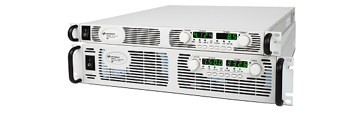

Use of SCPI to Control Bench Instruments
While working at LocoLab, I had the pleasure of using a variety of Keysight N5700 series power supplies.
I had one at my desk for testing motor controllers and charging batteries, and another for human-subject tests of the powered exoskeleton we were developing. These power supplies are incredible instruments, with only two flaws: their front panel is a bit of a chore to use, and they scream like a jet engine. With the goal of eliminating these two pain-points, I set out with the goal of writing a program to control them remotely, so that I could mount them slightly further from my ears.
Thankfully, the N5700's provide a variety of remote-control methods, including:
- Standard Commands for Programmable Instruments (SCPI) over USB
- SCPI over LAN
- SCPI over GPIB
- A Java applet, served on a built-in web server
- A simple analog programming interface
- Get the measured output voltage: MEASure:SCALar:VOLTage?
- Get the measured output current: MEASure:SCALar:CURRent?
- Turn the output on: OUTPut:STATe ON
- Set output voltage to 10V: SOURce:VOLTage:LEVel 10
Anything in lowercase is just included for clarity; OUTP:STAT ON does exactly the same thing as OUTPut:STATe ON. Thankfully, Keysight did the hard work of building a LabVIEW library of the most commonly used commands (available here). I just had to assemble the blocks into a usable program, and bolt on some application-specific input checking, to keep myself from frying what I was working on.